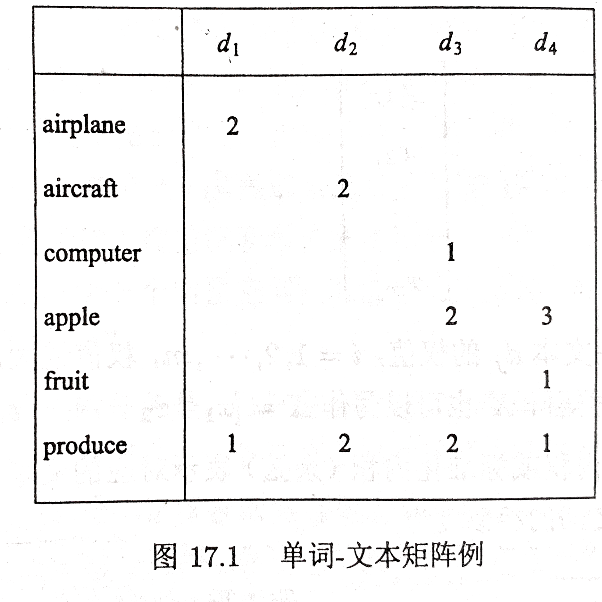

潜在语义分析(latent semantic analysis, LSA)是一种无监督学习方法，主要用于文本的话题分析，其特点是通过矩阵分解发现文本与单词之间的基于话题的语义关系。 潜在语义分析由Deerwester 等于 1990 年提出，最初应用于文本信息检索，所以也被称为潜在语义索引(latent semantic indexing, LSI),在推荐系统、图像处理、生物信息学等领域也有广泛应用。
文本信息处理中，传统的方法以单词向量表示文本的语义内容，以单词向量空间的度量表示文本之间的语义相似度。潜在语义分析旨在解决这种方法不能准确表示语义的问题，试图从大量的文本数据中发现潜在的话题，以话题向量表示文本的语义内容，以话题向量空间的度量更准确地表示文本之间的语义相似度。这也是话题分析(topic modeling)的基本想法。
潜在语义分析使用的是非概率的话题分析模型。具体地，将文本集合表示为单词-文本矩阵，对单词-文本矩阵进行奇异值分解，从而得到话题向量空间，以及文本在话题向量空间的表示。 奇异值分解(singular value decomposition, SVD)即在第 15 章介绍的矩阵因子分解方法，其特点是分解的矩阵正交。
非负矩阵分解（non-negative matrix factorization, NMF）是另一种矩阵的因子分解方法，其特点是分解的矩阵非负。1999 年 Lee 和 Sheung 的论文发表之后，非负矩阵分解引起高度重视和广泛使用。非负矩阵分解也可以用于话题分析。
文本信息处理，比如文本信息检索、文本数据挖掘的一个核心问题是对文本的语义内容进行表示，并进行文本之间的语义相似度计算。最简单的方法是利用向量空间模型（vector space model, VSM），也就是单词向量空间模型（word vector space model）。向量空间模型的基本想法是，给定一个文本，用一个向量表示该文本的"语义"，向量的每一维对应一个单词，其数值为该单词在该文本中出现的频数或权值；基本假设是文本中所有单词的出现情况表示了文本的语义内容；文本集合中的每个文本都表示为一个向量，存在于一个向量空间；向量空间的度量，如内积或标准化内积表示文本之间的"语义相似度"。
例如，文本信息检索的任务是，用户提出查询时，帮助用户找到与査询最相关的文本，以排序的形式展示给用户。一个最简单的做法是采用单词向量空间模型，将查询与文本表示为单词的向量，计算查询向量与文本向量的内积，作为语义相似度，以这个相似度的高低对文本进行排序。 在这里，查询被看成是一个伪文本，查询与文本的语义相似度表示查询与文本的相关性。
下面给出严格定义。给定一个含有 个文本的集合 ，以及在所有文本中出现的 个单词的集合 。将单词在文本中出现的数据用一个单词-文本矩阵（word-document matrix）表示，记作 ：
这是一个 矩阵，元素 表示单词 在文本 中出现的频数或权值。由于单词的种类很多，而每个文本中出现单词的种类通常较少，所以单词-文本矩阵是一个稀疏矩阵。
权值通常用单词频率-逆文本频率(term frequency-inverse document frequency, TF-IDF)表示，其定义是
式中 是单词 出现在文本 中的频数， 是文本 中出现的所有单词的频数之和， 是含有单词 的文本数， 是文本集合 的全部文本数。直观上，一个单词在一个文本中出现的频数越高，这个单词在这个文本中的重要度就越高；一个单词在整个文本集合中出现的文本数越少，这个单词就越能表示其所在文本的特点，重要度就越高；一个单词在一个文本的 TF-IDF 是两种重要度的积，表示综合重要度。
单词向量空间模型直接使用单词-文本矩阵的信息。单词-文本矩阵的第 列向量 表示文本
其中 是单词 在文本 的权值，，权值越大，该单词在该文本中的重要度就越高。这时矩阵 也可以写作 。
两个单词向量的内积或标准化内积（余弦）表示对应的文本之间的语义相似度。因此，文本 与 之间的相似度为
式中，表示内积， 表示向量的范数。
直观上，在两个文本中共同出现的单词越多，其语义内容就越相近，这时，对应的单词向量同不为零的维度就越多，内积就越大（单词向量元素的值都是非负的），表示两个文本在语义内容上越相似。这个模型虽然简单，却能很好地表示文本之间的语义相似度，与人们对语义相似度的判断接近，在一定程度上能够满足应用的需求，至今仍在文本信息检索、文本数据挖掘等领域被广泛使用，可以认为是文本信息处理的一个基本原理。注意，两个文本的语义相似度并不是由一两个单词是否在两个文本中出现决定，而是由所有的单词在两个文本中共同出现的"模式"决定。
单词向量空间模型的优点是模型简单，计算效率高。因为单词向量通常是稀疏的，两个向量的内积计算只需要在其同不为零的维度上进行即可，需要的计算很少，可以高效地完成。单词向量空间模型也有一定的局限性，体现在内积相似度未必能够准确表达两个文本的语义相似度上。因为自然语言的单词具有一词多义性（polysemy）及多词一义性（synonymy），即同一个单词可以表示多个语义，多个单词可以表示同一个语义，所以基于单词向量的相似度计算存在不精确的问题。
图15.1 给出一个例子。单词-文本矩阵，每一行表示一个单词，每一列表示一个文本，矩阵的每一个元素表示单词在文本中出现的频数，频数 0 省略。单词向量空间模型中，文本 与 相似度并不高，尽管两个文本的内容相似，这是因为同义词 “airplane” 与 "aircraft" 被当作了两个独立的单词，单词向量空间模型不考虑单词的同义性，在此情况下无法进行准确的相似度计算。另一方面，文本 与 有一定的相似度，尽管两个文本的内容并不相似，这是因为单词"apple"具有多义，可以表示"apple computer"和"fruit"，单词向量空间模型不考虑单词的多义性，在此情况下也无法进行准确的相似度计算。

两个文本的语义相似度可以体现在两者的话题相似度上。所谓话题（topic），没有严格的定义，就是指文本所讨论的内容或主题。一个文本一般含有若干个话题。如果两个文本的话题相似，那么两者的语义应该也相似。话题可以由若干个语义相关的单词表示，同义词（如"airplane"与"aircraft"）可以表示同一个话题，而多义 词（如"apple"）可以表示不同的话题。这样，基于话题的模型就可以解决上述基于单词的模型存在的问题。
可以设想定义一种话题向量空间模型（topic vector space model）。给定一个文本，用话题空间的一个向量表示该文本，该向量的每一分量对应一个话题，其数值为该话题在该文本中出现的权值。用两个向量的内积或标准化内积表示对应的两个文本的语义相似度。注意话题的个数通常远远小于单词的个数，话题向量空间模型更加抽象。事实上潜在语义分析正是构建话题向量空间的方法（即话题分析的方法），单词向量空间模型与话题向量空间模型可以互为补充，现实中，两者可以同时使用。
更多内容详见书籍。
潜在语义分析利用矩阵奇异值分解，具体地，对单词-文本矩阵进行奇异值分解，将其左矩阵作为话题向量空间，将其对角矩阵与右矩阵的乘积作为文本在话题向量空间的表示。
更多内容详见书籍。
更多内容详见书籍。
非负矩阵分解也可以用于话题分析。对单词-文本矩阵进行非负矩阵分解，将其左矩阵作为话题向量空间，将其右矩阵作为文本在话题向量空间的表示。注意通常单词-文本矩阵是非负的。
若一个矩阵的所有元素非负，则称该矩阵为非负矩阵，若 是非负矩阵，则记作 。
给定一个非负矩阵 ，找到两个非负矩阵 和 ，使得
即将非负矩阵 分解为两个非负矩阵 和 的乘积的形式，称为非负矩阵分解。因为 与 完全相等很难实现，所以只要求 与 近似相等。
更多内容详见书籍。
更多内容详见书籍。
更多内容详见书籍。
更多内容详见书籍。